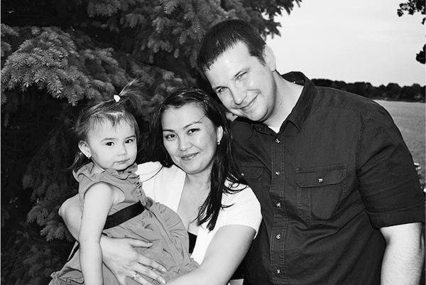

Принято считать, что математики — это люди, наделенные недюжинными интеллектуальными способностями, которые необходимо развивать с самого детства. И большинству точность и логичность математического мышления недоступна. Барбара Оакли, доктор наук, в этой книге доказывает, что каждый может изменить способ своего мышления и овладеть приемами, которые используют все специалисты по точным наукам. Она призывает читателей тренировать свой мозг и подтверждает на конкретных примерах, что каждый может изменить способ своего мышления и овладеть приемами, которые явно или неявно используют все специалисты по точным и естественным наукам. Прочитав эту книгу, вы научитесь: эффективно решать задачи из любой области знаний; освоите метод интерливинга (чередование разных типов задач); научитесь «сжимать» ключевые идеи так, чтобы их было удобнее удержать в памяти, и узнаете о возможностях своего мозга очень много нового!
Анри Пуанкаре, математик, живший во второй половине XIX — начале XX века, однажды рассказал, как он решил сложную математическую задачу, над которой безуспешно трудился несколько недель. Ученый взял отпуск. И когда на юге Франции он садился в автобус, ответ неожиданно пришел сам собой, всплыв из той части мозга, которая продолжала работать над задачей даже во время отдыха. Пуанкаре знал, что готовое решение уже найдено, хотя и не записывал деталей до возвращения в Париж.
Как это ни удивительно, мозг может трудиться над задачей, даже когда вы спите и ничего не ощущаете. Однако такое происходит, только если перед сном вы сосредотачиваетесь на попытках найти решение.
Книга расскажет об иллюзиях усвоения, а также о том, как не стать жертвой своих ложных представлений. Она вооружит вас новыми действенными приемами, такими как методика вспоминания, и в результате ваши немалые усилия по заучиванию материала принесут более весомые плоды. Эта книга покажет, почему одни способы действеннее других.
Джеффри Карпик, ассоциированный профессор психологии в Университете Пердью
Почему излишняя старательность может быть вредна?
Настройте свой «мыслительный насос».
Когда вы впервые начинаете просматривать главу учебника по математике или естественным наукам, полезно пробежать глазами весь раздел, составляя себе общую картину: взглянуть не только на схемы, диаграммы и фотографии, но и на заголовки разделов, выводы и даже на вопросы в конце текста (если они есть).
Таким способом еще до того, как начать внимательное ознакомление с текстом, вы создаете незаметные нейронные зацепки для восприятия, которые облегчат вам усвоение материала.
Мышление сфокусированное и мышление рассеянное
В рассеянном состоянии мозг способен незаметно, в качестве фонового процесса, обдумывать то, на чем вы в данный момент не сосредоточены
Сфокусированное мышление крайне важно для изучения математики и естественных наук. Оно предполагает прямое обращение к решаемой задаче и использует рациональный, последовательный и аналитический подход. Такой тип мышления ассоциируется со способностью сосредотачиваться, связанной с префронтальным участком коры головного мозга.
Изучение нового материала сопровождается «мигающими» нейронными процессами в разных участках мозга и передачей данных от полушария к полушарию.
Почему математика бывает более сложна для восприятия? Сфокусированный поиск решений в математике и естественных науках часто требует больше затрат, чем сфокусированный поиск решений в сферах, связанных с языком и людьми.Мы умеем размышлять о математике и естественных науках, но абстрактность и закодированность переводят проблему на более высокий — а порой и многократно более высокий — уровень сложности.
С этими трудностями в изучении математики и естественных наук связано еще одно осложнение, называемое «эффект установки». Речь идет о феномене, при котором уже имеющаяся у вас идея или начальная мысль препятствует поиску лучшей идеи или решения.
Эффект установки — частая помеха при изучении материала. Суть его не в том, что природную интуицию порой нужно обуздывать, а в том, что иногда сложно даже определить, с какой стороны подступиться к решению.
Вот почему одна из характерных ошибок при изучении математики и естественных наук состоит в том, что люди прыгают в воду раньше, чем научатся плавать. Иными словами, они начинают работать над заданием вслепую — не прочитав учебника, не прослушав лекций, не просмотрев онлайновых уроков, не поговорив с кем-нибудь знающим.
Представление о том, какими способами можно получить правильное решение, важно не только для выполнения заданий по математике и естественным наукам, но и для обыденной жизни.
Если вы пытаетесь уяснить новое понятие или решить новую задачу, то у вас пока нет нужных наработанных путей — тех широких полос, которые могли бы задать направление мысли. Значит, для поиска возможных решений вам понадобится более широкое пространство — здесь-то и пригодится рассеянное состояние!
Чтобы изучать математику и обращаться с ней творчески, нужно научиться использовать и сфокусированный, и рассеянный способ мышления
Сбиты с толку? Отлично!
«Непонимание — полезная часть процесса обучения.
Ощущение непонимания и тупика — стандартная и необходимая часть процесса получения знаний. Учеба — это преодоление непонимания. Задать правильный вопрос — значит на 80% добиться успеха.
Кеннет Леопольд, выдающийся преподаватель, специалист по методике преподавания (химический факультет Университета Миннесоты)
Как мы видим в итоге, решение задач в рамках любой науки часто предполагает поочередную работу двух типов мышления, абсолютно различных. Один тип обрабатывает поступающую информацию и передает результат другому. Такое перебрасывание информации по мере того, как мозг вырабатывает путь к сознательному решению, представляется основным компонентом процессов усвоения понятий и решения задач, кроме самых тривиальных
Прокрастинация как прелюдия
ЗАПОМНИТЕ: если вы откладываете занятия на потом, то оставляете себе время только на поверхностное изучение материала в сфокусированном режиме. Вы также взвинчиваете уровень стресса, поскольку понимаете, что вам потом придется заниматься тем, что представляется вам неприятным. В итоге нейронные пути будут слабы и фрагментарны и быстро исчезнут: в памяти останутся лишь шаткие базовые знания.
Если прокрастинация — ваша слабость и вы часто откладываете дела на потом, то вот вам подсказка. Выключите телефон и заглушите любые звуки или сигналы, которые могут прервать процесс. Затем поставьте таймер на 25 минут, сделайте 25-минутный перерыв в работе и сосредоточьтесь на задаче — любой. Не думайте о том, как ее закончить, просто сфокусируйтесь на поисках решения. По истечении 25 минут вознаградите себя: побродите по Интернету, проверьте сообщения в телефоне, сделайте что-нибудь приятное. Награда так же важна, как и работа над задачей.
Как выбраться из тупика. Рассказывает Надя Нуи-Мехиди, студентка-старшекурсница, изучающая экономику
«В последний год учебы в школе я начала изучать основы математического анализа, и это было для меня сущим кошмаром. Предмет был настолько непохож на все, что я изучала раньше, что я даже не знала, с какой стороны к нему подступиться. Я уделяла ему больше времени и усилий, чем любым другим занятиям, и бесконечно просиживала в библиотеке, но ничего не понимала. В конце концов я просто начала механически зубрить. Ничего удивительного, что экзамен сдала не лучшим образом.
В следующие два года я пыталась избегать математики, а затем — уже второкурсницей в колледже — вновь стала изучать матанализ и в итоге получила высший балл. Вряд ли за два года я так уж поумнела, просто теперь подходила к изучению предмета совершенно иначе.
В школе я застряла на сфокусированном мышлении и решила, что если биться о проблему не меняя подхода, то рано или поздно в мозгу что-то сдвинется и я все пойму.
Сейчас я преподаю математику и экономику, и трудность понимания у студентов почти всегда связана с тем, что они слишком зациклены на деталях задачи и пытаются найти в них ключ к решению, вместо того чтобы сосредоточиться на самой задаче. Вряд ли возможно научить людей мыслить, все очень индивидуально. Однако есть некоторые принципы, которые помогали мне понять то, что на первый взгляд казалось сложным или непонятным:
1. Я лучше понимаю материал не со слуха, а когда он представлен в виде письменного текста и поэтому всегда читаю учебник. Сначала я бегло проглядываю текст, чтобы иметь представление о его общей идее, а затем читаю подробно. Один и тот же текст прочитываю несколько раз (но не подряд).
2. Если после чтения книги я все еще не полностью понимаю тему, ищу материал в Интернете или смотрю соответствующие видеоролики на YouTube. Это не потому, что книга или преподаватель недостаточно хороши, а потому, что иногда другие формулировки помогают взглянуть на дело с иной точки зрения, и тогда приходит понимание.
3. Лучше всего мне думается за рулем. Иногда я просто откладываю дела, беру машину и куда-нибудь бесцельно еду — это очень помогает. Мне просто бывает нужно чем-то заняться: если я просто сижу и думаю, мне надоедает или я начинаю отвлекаться и тогда не могу сосредоточиться на проблеме».
Переключение со сфокусированного на рассеянное мышление
У большинства людей переход от сфокусированного мышления к рассеянному происходит естественным образом. Для этого достаточно на некоторое время отвлечься — погулять, поспать, сходить в спортзал. Или заняться делом, при котором задействованы другие участки мозга: послушать музыку, повторить спряжение испанских глаголов, почистить клетку хомяка. Главное — отвлечь мозг от рассматриваемой задачи до тех пор, пока она совершенно не выветрится из головы.
Стоит вам отвлечься от задачи, которой занимались, — и рассеянное мышление вступает в силу, мысль начинает перебегать от буфера к буферу по широкому пространству, пока не наткнется на решение
Томас Эдисон при решении сложных задач не зацикливался на поисках решения: как гласит легенда, он просто отправлялся подремать, но не в постели, а на кресле в гостиной. Изобретатель брал в руку шарикоподшипник, а на пол ставил тарелку. Он расслаблялся, мысли переходили в свободное и открытое рассеянное состояние. Когда Эдисон засыпал, подшипник выпадал из руки и звякал о тарелку — от этого ученый просыпался и успевал ухватить мысли, пришедшие в расслабленный мозг, и использовать их для новых изобретений
Креативность как плод использования и расширения способностей
Между техническим, научным и художественным творчеством существует глубокая связь. Эксцентричный художник-сюрреалист Сальвадор Дали, как и Томас Эдисон, ради достижения рассеянного состояния тоже засыпал с зажатым в руке предметом, который потом со звоном падал. (Дали называл это «сон без сна»).
Рассеянное мышление помогает постигать материал на глубоком и творческом уровне.
Мы все обладаем способностью устанавливать новые нейронные связи и брать из памяти то, что туда не клали (исследователи креативности Лайан Габора и Апара Ранджан называют это «магией креативности»). Понимание того, как работает мозг, поможет вам лучше осознать творческую природу некоторых ваших мыслей.
Наши неуспехи в математике и естественных науках способны многому научить нас. Знайте: каждая ошибка, которую вы осознаете при решении задачи, — знак прогресса, и поэтому радуйтесь, когда обнаруживаете ошибки. Сам Эдисон, как говорят, однажды заметил: «Я не ошибся. Я просто нашел десять тысяч способов, которые ни на что не годны»
Ошибки неизбежны. Чтобы они вам не мешали, начинайте поиск решения пораньше и, если этот процесс не приносит вам особой радости, делайте рабочие периоды короткими. Помните: во время перерывов мозг переключается в рассеянное состояние и работает в фоновом режиме: вы продолжаете учиться даже тогда, когда отвлеклись
Если вы пребываете в рассеянном состоянии — это не значит, что можно слоняться без дела и ждать, когда же вы куда-нибудь придете. На протяжении дней и недель работы цель достигается именно за счет смены состояний сфокусированного внимания и рассеянной расслабленности
Сфокусированное мышление, с которого часто начинается работа сознания над задачей, требует полного внимания. Исследования показывают, что у нас не так много ментальной энергии — силы воли — для этого типа мышления. Когда энергия иссякает, иногда можно устроить себе перерыв — переключиться на другую задачу, требующую сфокусированности, например перейти от математики к заучиванию французских слов. Однако чем больше времени вы проводите в сфокусированном режиме, тем больше мозговых ресурсов используете. Получается что-то вроде долгого концентрированного поднятия ментальных тяжестей. Вот почему так помогают при этом короткие передышки — двигательная активность или дружеская беседа, не требующая пристального сосредоточения.
Переход к рассеянному мышлению после упорной работы в сфокусированном режиме можно стимулировать с помощью разнообразных средств.
Во-первых, можно воспользоваться обычными активаторами рассеянного режима:
Во-вторых, есть такие активаторы рассеянного мышления, к которым лучше прибегать ненадолго, в качестве дополнительного стимула (эти занятия могут погрузить вас в более сфокусированное состояние, чем перечисленные выше). Вы можете:
При работе над трудной задачей или в ходе усвоения нового понятия почти всегда необходимы один или несколько периодов, когда не происходит сознательной работы над задачей. Каждый перерыв, в течение которого вы не сосредоточены на проблеме напрямую, позволяет мозгу в рассеянном режиме по-новому взглянуть на дело. Когда же переводите сфокусированное внимание обратно на задачу, вы собираете воедино новые идеи и способы, возникшие в мозгу за время рассеянного режима.
Смена типов мышления: после сфокусированного — рассеянное
Отдых между периодами сфокусированного мышления должен длиться не меньше, чем требуется мозгу для полного отвлечения от решаемой задачи. Обычно для существенного прогресса хватает нескольких часов рассеянного режима, который, однако, не должен быть слишком продолжительным — иначе уже найденные решения выветрятся из головы до следующего сфокусированного состояния. Практика показывает, что при изучении новых понятий лучше вернуться к ним не позже чем через один день.
Рассеянное мышление не только помогает взглянуть на материал под другим углом, но и позволяет встроить новые идеи в уже знакомую картину, присоединить их к уже известным фактам.
Что делать, если вы в тупике?
Людям с сильной волей может быть особенно сложно отключить сфокусированное мышление и дать мозгу возможность поработать в рассеянном режиме. Если вы сталкиваетесь с затруднением такого рода, можно попробовать еще один способ. Поставьте себе за правило прислушиваться к соученикам, друзьям, близким
Если вы в тупике, лучше всего спросить совета у однокашников, коллег или преподавателя. Чужое мнение даст вам другую точку зрения на то, как решить задачу, или новую аналогию для понимания новой концепции. Однако перед обращением к другим лучше сначала поработать над задачей самостоятельно, тогда основные понятия нужным образом отложатся в мозгу, и вы лучше воспримете сторонние объяснения. Усвоить материал — значит разобраться в знаниях, а для этого нужно эти знания иметь.
Парадоксы обучения
Изучение наук часто бывает парадоксальным. Именно то, что нужно для обучения, мешает нашей способности учиться. Для решения задачи нам нужно пристально сфокусировать внимание — однако сфокусированность может закрыть путь к необходимому нам свежему подходу. При всей важности успеха не менее важен неуспех. Как ни ценно упорство, излишне упорные усилия могут привести к ненужному недовольству и раздражению
Рабочая память и долговременная память. Общие сведения
Рабочая — это часть памяти, которая имеет дело с текущей, сознательно обрабатываемой информацией. При изучении математики и естественных наук рабочая память очень важна.
Как удержать объекты в рабочей памяти? Часто этому помогает повторение
В отличие от рабочей памяти долговременную память можно сравнить со складом. Попавший в нее объект обычно остается там надолго. Склад велик и способен вместить миллиарды объектов, многие из которых могут быть погребены так глубоко, что их будет непросто достать. Исследования показали: когда мозг впервые помещает конкретную информацию в долговременную память, то нужно еще несколько повторений — тогда информацию будет проще найти потом, когда она понадобится
При изучении математики и точных наук долговременная память тоже важна, поскольку именно в нее вы складываете фундаментальные понятия и приемы, которые вам понадобятся при решении задач. Для перемещения информации из рабочей памяти в долговременную требуется время. Помочь этому процессу может прием, называемый интервальным повторением. Как вы догадались, это растянутое на несколько дней повторение того, что вы хотите запомнить
Правильный сон
«Многие говорят, что не могут дремать. На единственном в моей жизни занятии йогой годы назад я научилась замедлять дыхание. Я медленно вдыхаю и выдыхаю и не твержу себе “Я должна спать!”, а думаю что-нибудь вроде “Пора спать” — и сосредотачиваюсь на дыхании. При этом в комнате должно быть темно, а если нет — я прикрываю глаза специальной маской, как в самолете. Будильник я ставлю на 21 минуту: если короткая дрема перейдет в долгий сон, то потом иногда ходишь как пьяная, а за 21 минуту я успеваю устроить мозгу что-то вроде когнитивной перезагрузки».
Эми Алкон, профессиональная колумнистка и королева кратковременного сна
Исследования показали, что сон принципиально важен для работы памяти и для обучения . Во сне мозг заново обращается к некоторым из самых сложных частей того, что вы пытаетесь выучить, и углубляет и усиливает нейронные связи .
И наконец, сон — действенное средство, призванное усилить нашу способность решать сложные задачи и осознанно воспринимать материал. Полная деактивация сознательного «Я» в префронтальном участке коры головного мозга, по-видимому, помогает другим участкам легче взаимодействовать друг с другом и устанавливать во время сна нейронные связи, способствующие решению задачи.
Нейропсихолог Роберт Билдер о творческом подходе
Преподаватель психиатрии Роберт Билдер — директор Центра биологии и творчества Тенненбаума в Калифорнийском университете (Лос-Анджелес), возглавляет проект Mind Well, призванный способствовать творческим успехам и психологическому комфорту студентов, сотрудников и преподавателей университета.
«Исследования в области биологии творчества обнаружили несколько важных факторов успеха, которые любой из нас может использовать в своем личном рецепте достижения профессионального успеха:
Главный «ингредиент» — как в рекламе Nike: «Just do it!» («Просто действуй!»).
Творчество — вопрос количества. О том, сколько творческих достижений будет у вас за всю жизнь, можно судить по тому… как много вы творчески трудитесь сейчас. Мне иногда бывает мучительно сделать усилие и показать новую работу другим, но каждый такой показ ведет только к лучшему.
Преодоление страха. Однажды после лекции, которую я читал в главном офисе компании Facebook, мне подарили постер-мотиватор с надписью «Что бы вы делали, если бы не боялись?». Не проходит дня, чтобы я на него не взглянул, и каждый день я стараюсь совершить какой-нибудь бесстрашный поступок. Чего вы боитесь? Не позволяйте страху останавливать вас!
Переделка тоже часть работы. Если не нравится то, что получилось, — сделайте заново!
Критика помогает совершенствоваться. Когда мы показываем работу другим и воплощаем свои идеи в конкретной форме так, что сами можем их оценить, мы получаем уникальную точку зрения и способ взглянуть на работу по-иному, а также разработать план по созданию новой, исправленной и дополненной версии.
Будьте готовы спорить. Существует отрицательная корреляция между уровнем креативности и «соглашательством»: обычно более творческие результаты показывают люди, не склонные соглашаться. Все мои открытия сделаны потому, что я решался оспорить существующие ответы. Поэтому я убежден, что истинно творческий подход вступает в действие только тогда, когда мы возвращаем проблему, над которой бьемся, к первоистокам и проверяем исходные посылки (как наши собственные, так и предложенные другими), а затем — все сначала!
Как стать «укротителем уравнений»
Лучшие программы обучения языкам — используемые, например, в Институте иностранных языков при министерстве обороны США, — включают в себя такие виды деятельности, как многократные повторения и механическое, сфокусированное заучивание, но также и свободное общение с носителями языка в рассеянном режиме сознания. Цель этого — усвоить основные слова и конструкции и пользоваться новым языком столь же свободно и творчески, как родным.
Сфокусированная практика и повторения — т.е. создание отпечатков в памяти — это основа и безупречного удара в гольфе, и баскетбольного броска, и мастерского переворачивания омлета опытным шеф-поваром. Если проводить аналогию с танцами, то между неуклюжим пируэтом трехлетнего ребенка и изящной хореографией профессионального танцовщика пролегает огромный путь, однако мастерство растет постепенно, шаг за шагом.
Что такое «порция информации»?
Порции — это фрагменты информации, связанные между собой по смыслу. В основе простой порции лежит симфония нейронов, которые научены звучать в тон друг с другом. Сложная нейронная активность, связывающая воедино наши упрощающие, абстрактные порции мысли — относятся ли они к акронимам, идеям или понятиям, — лежит в основе значительной части науки, литературы и искусства.
Давайте рассмотрим пример. В начале 1900-х немецкий исследователь Альфред Вегенер выдвинул гипотезу дрейфа материков. Анализируя карты и обдумывая информацию, тщательно собранную в ходе исследований, он обнаружил, что линии континентов совпадают, как части пазла. Сходство горных пород и ископаемых отложений между континентами только подтверждало догадку. Сопоставив обнаруженные факты, Вегенер понял, что все континенты когда-то давно были единым материком, который со временем разломился. Его части отошли друг от друга, сформировав разделенные океанами континенты в том виде, в котором мы их знаем. Дрейф материков! Какое грандиозное открытие!
Однако, если бы такой же рассказ об открытии дрейфа материков прочел Соломон Шерешевский, он не сумел бы вычленить главное. Он, способный в точности повторить каждое слово текста, не смог бы понять суть самого дрейфа, поскольку отдельные отпечатки в памяти не объединялись бы у него в понятийные порции.
Итак, при освоении математики и естественных наук один из главных шагов — создание понятийных порций, т.е. ментальных связок, объединяющих отдельные фрагменты информации через общий смысл . Объединение рабочей информации в порции помогает мозгу работать эффективнее. Когда идея или понятие зафиксированы в виде порции информации, вам уже не нужно держать в памяти мелкие детали: у вас есть общее представление — порция, и этого достаточно.
Основные способы формирования порций информации
Формирование порции — это мысленная связка, помогающая объединить оба вида информации по смыслу. Такое логическое единство делает порцию легкозапоминающейся и позволяет увидеть ее место среди прочего изучаемого материала.
Процесс обучения идет в двух направлениях. Формирование порций информации происходит снизу вверх: практика и повторение помогают сформировать и усилить каждую порцию, так что при необходимости вы сможете легко к ней подступиться. Формирование общей картины происходит сверху вниз и позволяет вам увидеть, к какой части широкой картины относится данный фрагмент информации. Оба процесса жизненно необходимы для овладения материалом. Контекст находится на стыке между «снизу вверх» и «сверху вниз». Для ясности отметим, что формирование порций связано с тем, каким образом используется конкретный способ решения задач. Контекст же имеет отношение к тому, когда применять данный конкретный способ, а не какой-либо другой.
Иллюзия компетентности и важность вспоминания
Попытки вспомнить материал, который вы изучаете, — т.е. практика извлечения данных из памяти, — гораздо эффективнее простого перечитывания
Алан Бэддели: «Намерение учиться помогает только в тех случаях, когда оно приводит к использованию правильных стратегий обучения»
Если вспоминать материал (извлекать из памяти информацию), а не перечитывать его пассивно, то вы будете более сосредоточены и потратите время более эффективно. Перечитывание может быть полезно лишь в одном случае: если вы при этом делаете значительные перерывы, так что все занятие становится упражнением по интервальному повторению материала
«Разница между пониманием нового материала на лекции и способностью применить его при решении задачи по физике соответствует разнице между простым студентом и полноценным ученым или инженером. Единственный известный мне способ перейти от одного к другому — усваивать материал так, чтобы он стал вашей второй натурой и вы начали бы использовать его как простой инструмент».
Томас Дей, преподаватель звукотехники, Музыкальный колледж Макнелли и Смита, Миннесота
Когда вы впервые формируете порцию информации, ее изначальные, пока не связанные элементы занимают всю рабочую память. По мере того как понятие формируется в порцию, вы заметите, что элементы начинают соединяться между собой более легко и гладко. Когда же порция информации сформирована, она занимает только одно место в рабочей памяти. Она сразу же становится цельной единицей, которой удобно пользоваться для связи с другими порциями, а остальная часть рабочей памяти остается незанятой.
Если вам нужно усвоить предмет так, чтобы успешно сдавать экзамены и использовать выученный материал творчески, то информация должна надежно осесть в мозгу. Способность объединять порции информации нестандартным образом — основа большинства инноваций в истории человечества.
Чем объемистее ваша мыслительная «библиотека» порций информации, тем легче вам будет решать задачи. Кроме того, с обретением опыта по формированию порций вы начнете замечать, что порции увеличиваются — «ленты» становятся все длиннее.
Вы, возможно, сейчас подумали, что в одной главе учебника по математике или естественным наукам столько понятий и задач, что все их усвоить просто невозможно! И здесь вступает в дело «закон озарений»: удача благоволит к тем, кто прилагает усилия и стремится к цели. Просто попытайтесь сосредоточиться на том, что изучаете. Вы обнаружите, что, когда любое первое понятие или задача попадает в вашу мыслительную библиотеку, второе понятие или задача дается чуть легче. А третье — еще легче. Не то чтобы процесс идет совершенно без усилий, но он упрощается.
Когда вы создаете библиотеку сформированных порций информации, вы учите мозг распознавать не только конкретную задачу, но и разные типы и классы задач, так что со временем вы будете автоматически видеть способы, предпочтительные для решения тех задач, которые вам встретятся. Вы начнете видеть закономерности, облегчающие поиск решения, и вскоре поймете, как много различных решений маячит в отдаленных уголках памяти
О важности формирования порций
«Математика порой оказывается удивительно компактной: вы можете долго, шаг за шагом биться над задачей, подходить к идее или процессу с разных сторон, но, как только пришло понимание и вы увидели масштаб явления на фоне целого, материал становится более компактным: вы можете его отложить в сторону, при необходимости вспомнить его быстро и в полном объеме, использовать его как рядовой этап в других мыслительных процессах. То озарение, которое приходит вместе с таким “сжатием” материала до компактного, и составляет одну из главных радостей изучения математики».
Уильям Терстон, лауреат Филдсовской премии (высшей награды в математике)
Повторение и упражнения, существенные для формирования надежных порций информации, могут быть слишком скучны — и потому неприятны. однако даже при всех своих отрицательных сторонах повторение и практика совершенно необходимы при обучении. Всем известно: без повторения невозможно научиться ничему. Математике и наукам невозможно научиться без нужного количества практики и повторений, формирующих порции информации, на которых держится ваше мастерство
Исследование, опубликованное в журнале Science, четко подтвердило это. Студенты читали научный текст, а потом пытались вспомнить как можно больше содержащейся в нем информации. Затем они еще раз читали текст и вспоминали сведения из него (т.е. пытались припомнить ключевые идеи).
И каков же был результат? Практика и воспроизведение материала по памяти давали студентам больше знаний и на более глубоком уровне, чем любые другие подходы, включая многократное перечитывание текста или вычерчивание блок-схем с основными понятиями, которые предположительно должны помогать усвоению материала. Улучшенный процесс обучения сказывается на результатах и формального тестирования, и неформальных самопроверок студентов.
Этот опыт — хорошее подспорье недавно упомянутому тезису. Когда мы вспоминаем выученное, мы не просто механически, как роботы, повторяем материал: процесс извлечения сведений из памяти сам по себе способствует более глубокому усвоению материала и помогает приступить к формированию порций информации.
Упорядочить записи и сформировать порции информации — вот путь к успеху
«Когда студенты плохо справляются с заданиями, я в первую очередь стараюсь взглянуть на то, как они записывают лекции и делают выписки из учебников. На первых занятиях я часто предпочитаю не переходить сразу к объяснению материала, а предварительно поговорить о том, как упорядочивать записи и формировать порции информации. На следующие занятия студенты приходят с уже хорошо структурированными записями и с изумлением отмечают, как много материала отложилось в мозгу».
Джейсон Дечант, доктор наук, руководитель программ по рекламе и развитию здравоохранения (Школа медицинских сестер в Питсбургском университете, Пенсильвания)
Интерливинг (чередование разных типов задач) — или избыточное обучение?
Интерливинг, или чередование, — это вид деятельности, при котором вы имеете дело с разными типами задач, решение которых требует разных стратегий.
Продолжение обучения или практики после того, как вы уже поняли материал, называется избыточным обучением. Избыточное обучение может быть полезным: оно помогает довести навык до автоматизма
Усвоение нового учебного предмета предполагает тренировку умения выбирать и применять нужный способ решения задачи, и научиться этому можно, только работая над задачами, решающимися разными способами.
Ваш мозг должен привыкнуть к мысли, что простое умение использовать конкретный способ решения — лишь часть успеха. Вы, помимо прочего, еще должны знать, когда его использовать.
Почему чередование лучше избыточного обучения?
Психолог Дуг Рорер из Университета Южной Флориды провел обширные исследования по чередованию и избыточному обучению применительно к математике и естественным наукам. Он отмечает:
«Многие считают, что избыточное обучение — это изучение материала или оттачивание навыков до победного конца. Однако исследователи связывают избыточное обучение с учебной стратегией, при которой студент продолжает изучать материал или отрабатывать навыки непосредственно после того, как нужный уровень уже достигнут. Например, после успешного решения задачи определенного типа вы немедленно решаете еще несколько задач того же типа. Хотя решение большего (а не меньшего) числа задач одного и того же типа часто способствует успеху на ближайшем экзамене, решение сразу слишком большого числа одинаковых задач приводит к отрицательным результатам.
В учебной аудитории (и где угодно еще) студенты должны наращивать количество выученного материала на единицу времени, потраченного на изучение или практику, — т.е. полезную отдачу от обучения. Как этого можно добиться? Научная литература дает однозначный ответ: вместо продолжительного совершенствования одного и того же навыка или понятия до степени избыточного обучения студенты должны разделить усилия на несколько более коротких сеансов. Это не значит, что долгие занятия обязательно плохи. Длительные занятия хороши при условии, если студенты не уделяют слишком много времени одному и тому же навыку или понятию. Как только они усвоили “икс”, нужно перейти к другому материалу, а к “иксу” вернуться в другой день»
Преодолеть травму мозга и научиться учиться в режиме ограниченного времени. История Пола Кручко
«Я рос в бедной, неблагополучной семье, с трудом окончил школу. После этого я ушел в армию, и меня отправили пехотинцем в Ирак. Восемь раз из двенадцати обстрелов в нашу машину попадали снаряды из придорожных засад.
По счастливой случайности в одной из поездок я встретил свою чудесную жену. Встреча с ней убедила меня оставить службу и завести семью. Однако я не знал, что делать. Хуже того, после возвращения домой у меня начались проблемы с вниманием и пониманием, появилась несвойственная мне раздражительность. Иногда я даже не мог закончить фразу. Лишь позже я прочел о том, что солдаты, вернувшиеся из Ирака и Афганистана, часто страдают недиагностированным травматическим повреждением мозга (TBI).
Я начал изучать компьютерную технику и электронику. Болезнь была настолько сильна, что я даже с трудом понимал дроби.
Однако это обернулось во благо. Учиться значило для меня делать что-то осознанно. Попытки сосредоточиться, пусть и нелегкие, перестраивали мозг и помогали ему исцеляться. Мне это напоминало тренировки в спортзале: я прилагаю усилия, и кровь бежит в мышцы, делая их сильнее. Со временем мозг вылечился — я с отличием окончил колледж и получил работу, стал техническим специалистом по электронике.
Я решил вновь пойти учиться, в этот раз на инженера. Математика, особенно математический анализ, еще более важна для инженера, чем для простого техника. На этом этапе стало ясно, что мне не хватает математических знаний — они оставались на уровне средних классов школы.
К этому времени я женился, у меня родилась дочь, я работал полный рабочий день. Мне приходилось не только работать, но и пытаться выкраивать время на образование. У меня были считаные часы в день на изучение сложных математических понятий на более глубоком уровне, чем когда-либо в жизни. После нескольких крупных неудач (я заработал неуд по дифференциальным уравнениям — вот так провал!) я решил применить более стратегический подход.
Каждый семестр я получаю от преподавателей программу курса и начинаю читать учебники за две-три недели до занятий, а то и раньше. Я стараюсь опережать сокурсников как минимум на одну главу, хотя часто в середине семестра это бывает невыполнимо. Главное здесь — практика решения задач, т.е. формирование порций информации. За время учебы я выработал для себя правила, которые позволили мне удовлетворительно закончить учебу. Моя цель сейчас — сделать хорошую карьеру, чтобы содержать семью, и эти правила помогают мне двигаться в нужном направлении».
Правила Пола для обучения в условиях ограниченного времени
Сделайте привычки (зомби) своими помощниками
Понимание некоторых аспектов когнитивной психологии прокрастинации может оказаться полезным для принятия превентивных мер.
НЕВОЗМОЖНО добиваться результатов в математике и естественных науках, если оставлять все на последнюю минуту.
У большинства людей результаты изучения математики и естественных наук зависят, во-первых, от коротких занятий, во время которых закладываются нейронные «кирпичи», и, во-вторых, долгих периодов между ними, во время которых мыслительный «котел» успевает остыть. Поэтому прокрастинация как невероятно распространенная проблема многих студентов особенно важна для тех, кто изучает математику и естественные науки.
Мы прокрастинируем в отношении того, что нам неприятно
Избегать неприятных занятий — с виду разумное поведение, однако, к сожалению, его результат со временем может оказаться весьма неприятным. Когда занятия математикой все больше откладываются, приступать к ним становится все страшнее. И если вы откладываете подготовку к экзаменам, то в решающий день вы задыхаетесь от недостатка знаний, поскольку у вас не сформирован нейронный фундамент, который позволил бы вам уверенно обращаться с материалом.
Прокрастинация — отдельная, неоспоримо важная, «ключевая» вредная привычка. То есть привычка, влияющая на многие важные аспекты жизни. Избавьтесь от нее — и в вашей судьбе постепенно начнут происходить тысячи благоприятных перемен.
Есть и еще один критически важный пункт. Дистанцироваться от того, в чем вы не преуспеваете, довольно легко. Однако чем лучше вы овладеваете каким-то навыком или предметом, тем больше удовольствия он вам доставляет.
Прокрастинация похожа на болезненное пристрастие. Она на некоторое время возбуждает и отвлекает вас от скучной реальности. Вы без труда можете убедить себя, что, скажем, в данной ситуации лучше потратить время на поиск информации в Интернете, нежели на чтение учебника и решение задачи. Вы начинаете себя уговаривать. Дескать, для органической химии необходимо пространственное воображение (с которым у вас плохо), и поэтому, конечно же, вы плохо ее понимаете. Вы изобретаете абсурдные обоснования, которые кажутся чрезвычайно разумными: «Если я начну заниматься задолго до экзамена, то все успею забыть». И только под конец семестра, когда вы начнете лихорадочно зубрить материал к экзамену, вы понимаете настоящую причину провала по органической химии: вы слишком много прокрастинировали.
Исследования показали, что прокрастинация даже может стать источником гордости и заодно оправданием неудач: «Я вчера готовился к экзамену вечером, после лабораторного отчета и маркетингового опроса. Конечно, мог бы сдать и получше, но невозможно же успеть все сразу!» Даже те, кто усердно занимается, время от времени любят похвалиться прокрастинацией для придания себе большего веса и интереса в глазах окружающих: «Наконец-то вчера заставил себя сесть и подготовиться к экзамену».
Прокрастинации, как и любой другой привычке, легко поддаться. Как только вы решаете отложить намеченное дело на потом, вы расслабляетесь до привычного прокрастинационного состояния. Привычная, «зомбированная» тяга к этим крохам удовольствия может постепенно ослабить вашу уверенность в себе, так что вам уже не так захочется учиться эффективной трате времени. У тех, кто подвержен прокрастинации, уровень стресса обычно выше, здоровье хуже и оценки ниже. Со временем привычка может укорениться, и тогда попытки от нее избавиться будут казаться безнадежными.
Перемены возможны!
«Я страдала прокрастинацией, но теперь все по-другому. Некоторые занятия в старшей школе научили меня дисциплине. На домашние задания по истории США уходило от четырех до шести часов ежедневно, и я научилась делать уроки небольшими порциями. Я поняла, что удовлетворение от выполненного подталкивает вперед и не дает сойти с дистанции».
Пола Меершарт, первый курс, литературное творчество
Меньше усилий — больше пользы
«Когда студент жалуется на проваленный экзамен и сообщает, что накануне занимался целых десять часов, я отвечаю: “Вот почему вы провалились”. И когда студент отвечает недоуменным взглядом, добавляю: “Нужно было заниматься понемногу, но постоянно”».
Ричард Нейдел, старший преподаватель математики, Международный университет Флориды
Активно обращайтесь за полезными советами! Рекомендация Нормана Фортенберри, ведущего эксперта США по техническому образованию
«Когда я учился на первом курсе, я уже знал, что хочу стать инженером, поэтому вместо простого курса математического анализа, на который ходили мои товарищи, я записался на углубленный. Это было ошибкой. Многие из тогдашних моих сокурсников изучали матанализ в старших классах и теперь лишь расширяли знания. Конкурировать с ними было бесполезно. Хуже того, поскольку на этот курс ходили немногие, мне почти не из кого было выбрать партнера по учебе, а ведь в том учебном заведении, в отличие от школы, не приветствовалась и даже порицалась работа в одиночку: преподаватели инженерных наук обычно уверены, что ты работаешь — и выполняешь домашние проекты — в партнерстве с другими. Я с трудом добивался оценки “хорошо”, но всегда понимал, что у меня плохо с концептуальным и интуитивным пониманием основ матанализа и всех базирующихся на нем последующих курсов. Я много занимался в одиночку, едва успевая усвоить нужный объем материала к очередному занятию, однако на это тратилось лишнее время, которое я мог бы употребить на другие цели.
Мне повезло, и я благополучно получил степень бакалавра в сфере машиностроения, а затем при содействии и под руководством нескольких однокурсников и научного руководителя перешел в магистратуру и получил докторскую степень по машиностроению. Главное, что я из этого вынес, — когда выбираете учебные предметы, всегда спрашивайте совета у соучеников и преподавателей. “Коллективная мудрость” будет вам полезна».
Углубимся в причины прокрастинации.
Привычки бывают полезными и вредными. Привычка — это когда мозг впадает в ранее запрограммированное «зомбированное» состояние. Формирование порций информации — нейронных паттернов, автоматически образующихся в результате частого повторения, — очень близко соотносится с привычкой.
Привычка — средство экономии наших сил, она позволяет освободить сознание для других видов деятельности.
У привычных действий четыре этапа:
Ключевой метод перестройки привычки — найти чувствительное место: вашу реакцию на сигнал. Единственный шаг, который требует силы воли, — изменить реакцию на сигнал.
Для понимания этого полезно взглянуть на все четыре компонента привычки с точки зрения прокрастинации.
Вознаграждение. Иногда этот пункт требует пояснений. Почему мы прокрастинируем? Чем мы можем заменить положительный эмоциональный отклик? Гордостью за достижение, даже самое малое? Чувством удовлетворения? Можете ли вы выиграть внутреннее пари, игру с самим собой? Вознаградить себя чашкой кофе или посещением любимого сайта? Подарить целый вечер беззаботному просмотру телевизора или блужданию в Интернете, не испытывая при этом ни малейшего чувства вины? И каким крупным подарком вы вознаградите себя за более крупное достижение — билетами в кино, свитером, совершенно легкомысленной покупкой?
Помните: привычки сильны потому, что они формируют влечение на нейробиологическом уровне. Если вам нужно преодолеть предыдущую тягу к чему-то, придумайте новую награду. Изменение старых привычек и, соответственно, формирование новых произойдет лишь тогда, когда мозг начнет ждать вознаграждения.
Очень важно понимать, что запустить процесс перестройки сознания может ваша даже самая малая похвала в собственный адрес. Такая перестройка, иногда называемая приобретенным трудолюбием, помогает оживить деятельность, которая раньше казалась скучной и неинтересной
Если вы пытаетесь избегать какого-то неприятного или некомфортного занятия, то попробуйте сосредоточиться не на «продукте», а на процессе.
Процесс — это течение времени, а также привычки и действия, с ним ассоциируемые. «Я собираюсь 20 минут поработать». «Продукт» — это то, что должно получиться в итоге: например, выполненное до конца домашнее задание.
Разделите работу на малые отрезки, затем занимайтесь интенсивно, но короткими периодами
Метод помидора — это техника, призванная помочь сфокусировать внимание на короткий промежуток времени. Помидором он называется потому, что Франческо Чирилло, изначально разработавший эту систему тайм-менеджмента в 1980-х, использовал кухонный таймер в форме помидора. Метод помидора предполагает, что таймер будет выставляться на периоды по 25 минут. Как только таймер запущен, вы в игре. Никаких вылазок в Интернет, телефонных разговоров или SMS-переписок с друзьями. У метода помидора есть удачное свойство: если вы занимаетесь в кругу семьи или друзей, расскажите им об этой системе, и, когда вас прервут во время занятий, вы можете просто сказать «Я занят помидором» или «У меня таймер» — тогда они оставят вас в покое и ничуть не обидятся.
Когда возникает соблазн отвлечься (а он всегда будет возникать!), главное — научиться на него не реагировать. Это один из важнейших советов, которые я могу дать насчет прокрастинации: не поддавайтесь отвлекающим мыслям.
Фокусируясь на процессе, а не на продукте, вы выходите из режима постоянного самоконтроля и беспокойства («Скоро ли конец? Много ли еще осталось?») и расслабляетесь, погружаясь в рабочее состояние. Это помогает избежать прокрастинации в случаях, связанных не только с математикой и естественными науками, но и с письменными заданиями по многим дисциплинам.
Преподаватель математики Оральдо «Бадди» Сауседо о неудаче, которая может привести к победе
Вот некоторые из истин, которым я научился на пути к успеху:
Говорят, что опыт — лучший учитель. Нет, лучший учитель — это неудача. Лучше всех учится тот, кто лучше справляется с неудачами и делает их ступенью для дальнейшего обучения».
Как повысить свой уровень знаний и снизить беспокойство? Как сформировать действенную порцию информации?
Когда вы начинаете работать над математической или естественно-научной задачей, вы замечаете, что каждое завершенное действие дает сигнал к следующему шагу. Усвоение техники решения задач усиливает активность нейронов, и вы начинаете лучше слышать «шепот» подсознания — подсказки крепнущей интуиции. Когда при первом взгляде на задачу вы знаете — истинно знаете, — как она решается, это значит, что у вас уже сформировалась главная порция информации, которая пронизывает, как песня, ваше сознание. Библиотека таких порций информации уникальным образом позволяет вам понять основные концепции изучаемого материала.
Пошаговая инструкция по формированию действенных порций информации
Вот и все. Мы перечислили ключевые шаги к тому, чтобы сформировать библиотеку порций информации. Вы просто создаете и укрепляете сеть взаимосвязанных нейронов — обогащаете и укрепляете порции информации. Этот процесс основан на так называемом эффекте генерации. Генерация (т.е. вспоминание) материала помогает выучить его более эффективно, чем с помощью простого перечитывания.
Исследования показали: чем больше усилий вы прилагаете к тому, чтобы вспоминать материал, тем глубже он оседает в памяти. Вспоминать, а не просто перечитывать — вот лучший способ «намеренной тренировки» при обучении.
Практика вспоминания — один из самых действенных способов усвоения знаний. Он намного более продуктивен, чем простое перечитывание материала. Создание библиотеки, где собраны способы решения задач, эффективно как раз потому, что оно базируется на методах практики вспоминания.
Не забывайте: усвоение новых знаний требует времени. У вас случатся периоды, когда изучаемый материал будет казаться непонятным, будто вас вдруг отбросило на шаг назад. Это естественный феномен, означающий, что материал обрабатывается и упорядочивается в глубинах сознания. По окончании каждого такого неприятного периода вы увидите, что ваши знания существенно продвинутся вперед.
Секрет запоминания. Мудрый совет от одного из величайших психологов в истории
«Любопытная черта памяти: след остается прочнее при активном, чем при пассивном повторении. Например, при заучивании наизусть отрывка, когда мы уже почти его выучили, имеет смысл подождать и затем вспомнить “изнутри памяти”, а не заглядывать в книгу. Если мы извлечем текст из памяти самостоятельно, то в следующий раз, скорее всего, уже будем знать его наизусть, а если будем вспоминать его по книге — то книга нам наверняка понадобится еще раз».
Уильям Джеймс, написано в 1890 г.
Активное вспоминание — один из лучших учебных методов: он гораздо действеннее, чем просто пассивное перечитывание! Создание библиотеки порций информации плюс интенсивная практика многократного вспоминания материала — это лучшая из возможных методик получения глубоких, надежных знаний.
Нил Сандаресан, старший директор исследовательских лабораторий eBay о вдохновении и шагах к успеху в математике и естественных науках (доктор Нил Сандаресан — создатель программы Inspire!, помогающей студентам успешно осваивать математику, естественные и технические науки).
«Я учился не в элитных школах, а в школе ниже среднего уровня — по многим предметам у нас не было нормальных учителей. Однако я старался находить что-то хорошее в каждом учителе, который попадался на моем пути: кто-то обладал отличной памятью, у кого-то просто была приятная улыбка. Такой доброжелательный подход помогал мне ценить преподавателей и относиться к их урокам без предубеждения.
Такое же отношение ко всему помогало мне и в дальнейшей карьере. Сейчас я всегда ищу вдохновения среди людей, с которыми — и для которых — я работаю. Если я падаю духом, понимаю: это оттого, что я перестал искать в людях хорошее. Значит, пора взглянуть внутрь себя и что-то изменить.
Я знаю, это прозвучит банально, но примером для меня всегда была моя мать. Она недоучилась в школе, потому что для учебы в старших классах ей пришлось бы уехать из маленького городка, где она жила. Она росла в интересное, но опасное время, когда Индия боролась за независимость. Для моей матери тогда были закрыты все двери, и именно это укрепило во мне решимость открыть эти двери для других, помочь людям реализовать те бесчисленные возможности, которые лежат так близко.
Одно из правил моей матери гласило: “Писать — значит учиться”. Когда учился в магистратуре и потом аспирантуре, я убедился в том, что систематически понимать и записывать каждый шаг того, что изучаешь, — мощное средство обучения.
Учась в магистратуре, я порой видел, что другие студенты интенсивно выделяют в учебнике этапы доказательств или подчеркивают предложения в абзацах. Я никогда этого не делал. Подчеркивание нарушает оригинал без всякой гарантии того, что выделенная информация отложится в сознании и принесет пользу.
Мой собственный опыт, таким образом, созвучен исследованиям и открытиям. Лучше не подчеркивать и не выделять фрагменты текста, поскольку — по крайней мере судя по моему опыту — это действие лишь создает иллюзию компетентности. Вспоминать и пересказывать текст — гораздо более мощное средство. Попытайтесь добиться того, чтобы основная идея рассказанного на каждой странице отложилась у вас в сознании прежде, чем вы перейдете к следующей.
Мне обычно нравилось учить наиболее сложные для меня предметы — например, математику — по утрам, на свежую голову. Этот подход я применяю и до сих пор. Некоторые из самых лучших идей приходили ко мне в ванне и под душем, когда мозг совершенно отвлечен от предмета и в рассеянном состоянии творит чудеса».
Признанный специалист по менеджменту Дэвид Аллен отмечает: «Мы хитростью заставляем себя же самих делать то, что сделать надо… Люди, достигшие высокого уровня личной эффективности, сделали “трюки” обязательной составляющей своей жизни… Наше сознание принимает решения о действиях, тогда как наше подсознание почти автоматически вырабатывает поведение, способствующее достижению хороших результатов…».
Под «трюками» Аллен имеет в виду случаи, когда, например, он надевал спортивный костюм для того, чтобы исполниться решимостью позаниматься спортом, или клал важный отчет у входной двери, чтобы на него наткнуться. Я постоянно слышу от студентов, что новое место занятий — как, скажем, тихий закуток библиотеки, в котором почти нет отвлекающих сигналов, — творит чудеса с прокрастинацией. Исследования подтверждают, что специально отведенное для работы место очень помогает сосредоточению.
Еще одна хитрость — с помощью медитаций научиться игнорировать отвлекающие мысли.
Последний важный трюк — перенастроить фокусировку. Один из студентов, например, может просыпаться в рабочие дни в 4:30, и в этом ему помогают не мысли о том, как ему тяжело, а предвкушение хорошего завтрака.
Позитивный подход к прокрастинации
«Я всегда говорю студентам, что прокрастинировать можно, если соблюдать три правила:
Я обнаружила, что такой подход очень полезен, поскольку задача в это время обдумывается в рассеянном режиме — студенты над ней работают даже во время прокрастинации».
Элизабет Плауман, преподаватель по физике, Колледж Камосан, Виктория, Британская Колумбия
Одиночество или работа в группе. Разные подходы к борьбе с прокрастинацией
«Полезный совет при прокрастинации: изолируйте себя от отвлекающих факторов, в том числе людей. Уйдите в другую комнату или в библиотеку, чтобы вас ничего не отвлекало».
Аукури Кауарт, второй курс, изучает электротехнику
«Если я не понимаю материал, мне полезнее заниматься вместе с сокурсниками: можно задать им вопрос, и мы вместе выясним то, что непонятно. Вполне возможно, я знаю, как помочь им, а они — мне».
Майкл Паризо, первый курс, изучает машиностроение
Как избежать прокрастинации? Советы Джонатана Маккормика, изучающего промышленное машиностроение
Как справляться с жизненными проблемами с помощью волшебного математического маринования. История Мэри Ча
«Мой отец бросил семью, когда мне было три недели от роду, а мать умерла, когда мне исполнилось девять лет. В результате я ужасно училась в школе и ушла от приемных родителей еще тинейджером, всего с $60 в кармане.
Сейчас у меня почти максимальный средний балл, я изучаю биохимию и готовлюсь поступать в медицинскую школу в следующем году.
В 25-летнем возрасте я поступила на военную службу, иначе не получалось сводить концы с концами. Армия стала для меня наилучшим выходом, хотя армейская жизнь совсем не легка. Особенно тяжело мне пришлось в Афганистане. Работой я была довольна, но общих тем для разговоров с коллегами не могла найти. Мне часто бывало одиноко, и в свободное время я начала заниматься математикой, чтобы не забыть то, что знала.
Военный опыт дал мне полезные для обучения привычки. Не в смысле умения часами чем-то заниматься, а в смысле способности пользоваться доступным временем: “Есть несколько минут — посмотрим, что можно сделать!” Покоя там не было, постоянно всплывало то одно, то другое, и приходилось заниматься урывками.
Тогда-то я неожиданно обнаружила “волшебное математическое маринование” — эквивалент рассеянного режима мышления. Порой я билась над задачами и заходила в совершеннейший тупик, и если в такой момент меня вызывали на службу из-за очередного взрыва, то, что бы я ни делала — шла во главе отряда или просто спокойно сидела в ожидании, — задача крутилась в мозгу в фоновом режиме. И когда я позже возвращалась к себе, решение уже было готово!
Я обнаружила и еще одну хитрость — я назвала ее «активным повторением». Когда я причесываюсь или принимаю душ, мысленно повторяю задачи, которые уже решила. Так они остаются в активной памяти, и риск забыть их снижается.
Процесс изучения материала проходит у меня так:
В юности я считала, что, если я не получаю желаемое сразу же, значит, уже никогда не смогу это получить: нет способностей. Теперь же я понимаю, что главное — начать работу загодя, чтобы было время все переварить. Тогда понимание придет без стрессов и изучение материала станет более приятным процессом».
Креативные прорывы — расслабленные моменты озарений, перетекающие в целую ночь напряженной, самозабвенной и неотрывной работы, — не похожи на типичный день изучения математики и естественных наук. Они подобны скорее спорту. Время от времени выпадает день соревнований, когда вам нужно выложиться до конца в режиме повышенного напряжения. Однако тренироваться каждый день в таком режиме вы не станете.
В наиболее плодотворные дни, когда вы засиживаетесь за работой всю ночь, вы можете выполнить невероятный ее объем, однако если в последующие дни вы сверитесь с ежедневником, то заметите, что работоспособность понизилась. Те, кто привык работать запоем, в основном менее продуктивны, чем те, кто делит работу на разумные ограниченные порции. Если оставаться в «зоне повышенного риска» слишком долго, то немудрено перегореть.
Неотвратимость дедлайна может повысить уровень стресса и толкнуть вас в зону, где включившиеся гормоны стресса помогут ментальным процессам.
«Мы, преподаватели, всегда рекомендуем студентам формировать порции информации, а не просто запоминать разрозненные факты и тем самым порой создаем впечатление, будто запоминание не так уж существенно (зачем запоминать уравнение, которое можно посмотреть в учебнике?). Однако запоминание ключевых фактов чрезвычайно важно, поскольку эти факты и составляют основу творческого процесса формирования порций информации! Нужно продолжать мысленно жонглировать и играть фактами, которые мы запомнили, и тогда из них образуются порции информации».
Форрест Ньюман, преподаватель астрономии и физики, Городской колледж Сакраменто, Калифорния
Зрительно-пространственная память
«Дворец памяти»
Метод «дворца памяти» основан на том, чтобы вызвать в памяти знакомое место — скажем, ваш дом — и использовать его в качестве визуальной основы («блокнота»): на нее можно наложить образы-понятия, которые вы хотите запомнить.
Песни, которые помогают укрепить материал в сознании, также имеют отношение к «дворцу памяти» в том смысле, что они тоже преимущественно используют правое полушарие мозга. Есть мелодии, помогающие запомнить формулу квадратного уравнения, формулы исчисления объема геометрических фигур и другие. Если вбить в поисковик запрос «квадратное уравнение» и «песня», то найдутся примеры, а можно придумать и свой собственный. Многие детские песенки предполагают движение вместе с пением, чтобы лучше усваивались слова, и разные типы осмысленных движений (притопывание, подпрыгивание и пр.) могут дать дополнительное количество нейронных зацепок, необходимых для сохранения материала в памяти, поскольку движения будут составлять часть запоминаемого.
Песенки для взбадривания мозга
«На уроках химии в школе мы проходили число Авогадро — 6,02214 × 107, — которое никто не мог запомнить. Кто-то из моих друзей сочинил о нем песенку на мотив рекламного ролика для хлопьев Golden Grahams. И даже теперь, 30 лет спустя, я помню число Авогадро именно благодаря той песенке».
Малькольм Уайтхаус, выпускной курс, изучает компьютерную технику
«Когда вы заучиваете материал, полезно походить туда-сюда. Стоит заранее перекусить, ведь при мыслительной деятельности мозгу нужны силы. Кроме того, занимаясь, важно задействовать разные участки мозга. Зрительные участки коры головного мозга используются для запоминания визуальной информации, слуховые — для слуховой, сенсорные — для ощущений, моторные — для движений. Чем больше участков мозга работают при обучении, тем надежнее будут сформированные шаблоны памяти: они теснее переплетутся друг с другом, образуя сеть, которой не страшны экзаменационные волнения. Например, в анатомической лаборатории студенты должны взять анатомическую модель, закрыть глаза, ощупать все компоненты и вслух назвать каждую из частей. Можно, впрочем, обойтись без ощущения запаха и вкуса — нужно же где-то поставить точку!»
Трейси Магранн, преподаватель биологии, Колледж Сэддлбек, Калифорния
Преподаватель, специалист по системам машинного зрения Шерил Сорби: пространственные навыки — дело наживное (Шерил Сорби — заслуженный инженер со многими наградами, чьи научные интересы включают в себя проектирование трехмерной компьютерной графики для визуализации сложных действий).
«Многие ошибочно полагают, что пространственное воображение — постоянная величина: либо оно есть, либо его нет. Заявляю со всей ответственностью: это неправда, и я — живое свидетельство тому, что пространственным навыкам можно научиться. Я когда-то чуть не решила бросить изучать инженерное дело из-за плохо развитого пространственного воображения, однако занялась им вплотную, развила навыки и успешно получила научную степень. Именно те студенческие проблемы подтолкнули меня к решению посвятить свою жизнь тому, чтобы помогать студентам в развитии пространственного воображения. Практически все студенты, с которыми я работала, в конечном итоге сумели улучшить свои способности к пространственному мышлению благодаря практике.
Человеческие способности чрезвычайно разнообразны — от музыкальных и вербальных до математических и дальше. Одна из важнейших способностей — пространственное мышление. Люди с хорошим пространственным мышлением могут представить себе, как будет выглядеть объект в другом ракурсе, или после вращения, или будучи разделен пополам. В некоторых случаях пространственное мышление вступает в действие, когда при наличии одной лишь карты надо найти самый удобный путь из одной точки в другую.
Способность мыслить пространственными категориями важна в машиностроении, архитектуре, компьютерных науках и других сферах. Например, авиадиспетчеры должны представлять себе направление пути нескольких самолетов в данный момент времени и делать так, чтобы машины не столкнулись. Не обойтись без пространственного мышления и автомеханику, который должен вставить нужные детали в двигатель. Недавние исследования установили связь между пространственным мышлением, с одной стороны, и творчеством и инновациями — с другой. Это значит, что чем лучше у вас пространственное мышление — тем более креативным и инновационным будет ваш подход!
Мы обнаружили, что у некоторых студентов низкий уровень пространственного восприятия: это может быть связано с недостатком детского опыта, который помог бы развить эти навыки. Дети, которые часто разбирали предметы и собирали их вновь, обычно обладают хорошим пространственным мышлением, как и дети, занимавшиеся определенными видами спорта. Возьмем, к примеру, баскетбол: игрок должен, находясь в любом месте площадки, уметь вообразить себе дугу, по которой мяч гарантированно попадет в корзину.
Если вы в детстве ничем таким не занимались — еще не поздно все исправить. Пространственные навыки могут развиться и во взрослом возрасте, нужны лишь практика и терпение.
Как добиться результата? Попытайтесь нарисовать какой-нибудь предмет, а потом изобразить его еще раз, изменив точку зрения. Помогают и трехмерные компьютерные игры, где нужно собирать трехмерные головоломки (можно начать с двухмерных). Выключите GPS и старайтесь ориентироваться по карте. А главное — не сдавайтесь, продолжайте тренироваться!»
Придумайте яркую визуальную метафору или аналогию
Один из лучших способов не просто запомнить, а постигнуть смысл математического и естественно-научного понятия — придумать для него метафору или аналогию, причем чем более зримым будет образ, тем лучше. Метафора — отличный способ увидеть, что один предмет похож на другой.
Метафоры никогда не идеальны, но ведь все научные модели — всего-навсего метафоры, т.е. они тоже на определенном этапе распадаются. Однако и метафоры, и модели жизненно необходимы для понимания центральной идеи, стоящей за математическими или научными процессами или понятиями, которые вы пытаетесь изучить.
Метафоры также помогают зафиксировать идею в сознании, поскольку они устанавливают связь с уже существующими нейронными структурами.
Метафоры и визуализация в науке
Метафоры и визуализация — способность увидеть нечто внутренним зрением — непревзойденно мощное средство для поддержания научного и технического прогресса
Интервальные повторения как средство уложить знания в памяти
Благодаря концентрации внимания некоторая часть усвояемого материала оказывается в вашей временной рабочей памяти. Однако, чтобы эта часть перешла из рабочей памяти в долговременную, нужны два условия: 1) материал должен быть запоминаемым и 2) требуется повторение.
Повторение очень важно. Даже когда вы уже запомнили нужную информацию, повторение надежно укореняет ее в долговременной памяти.
Группируйте явления по смыслу
Еще один способ облегчить запоминание — объединять явления, понятия, факты и прочее в группы, чтобы упростить материал.
Существуют специальные фразы для запоминания (мнемонические подсказки), помогающие студентам удерживать в памяти информацию о различных явлениях: первая буква каждого слова в такой фразе является также первой буквой слова из того списка, который нужно запомнить.
Сочиняйте истории
Сочинение историй — давний способ понимания и сохранения информации. Профессор Вера Паври, преподающая историю науки и технологий в Йоркском университете, учит студентов не относиться к лекциям как к лекциям, а видеть в них связный рассказ, где есть сюжет, персонажи и общая цель повествования.
Пишите!
«Отвечая на вопросы студентов, я всегда отмечаю: между рукой и мозгом существует прямая связь, и, когда вы переписываете и упорядочиваете конспекты, информация сама собой распадается на легкоусвояемые порции. Многие из моих студентов набирают лекции на компьютере в виде документа Word или слайдов, и, когда им становится сложно усваивать информацию, я рекомендую им начать писать от руки. И каждый раз при прохождении следующей темы такие студенты демонстрируют более уверенное знание материала».
Джейсон Дечант, доктор наук, руководитель программ по продвижению и развитию здравоохранения (Школа медицинских сестер в Питсбургском университете, Пенсильвания)
Мышечная память
Рукописные карточки помогают знаниям надежнее осесть в мозгу. И хотя исследований по этому поводу довольно мало, многие преподаватели отмечали, что, когда человек пишет ручкой, срабатывает его мышечная память.
Говорите сами с собой
«Я часто советую студентам разговаривать самим с собой, а не просто подчеркивать или перечитывать текст учебника. В ответ студенты смотрят с недоумением, будто считают меня ненормальной. Однако многие из них приходили ко мне снова и говорили, что этот метод не только помог, но и стал одним из любимых способов обучения».
Дина Мийоши, доцент, преподаватель психологии, Колледж Меса, Сан-Диего, Калифорния
Истинная мышечная память
Если вы действительно хотите развить память, а заодно и общую способность к усвоению материала, то один из лучших способов — физические упражнения. Они, судя по результатам, помогают формировать новые нейроны в участках, связанных с памятью, а также создают новые сигнальные пути
Вперед к интуитивному пониманию
Когда вы поняли, почему нечто делается именно так, а не иначе, вам уже не нужно каждый раз объяснять себе, каким образом это делается.
Важно не что вы знаете, а как мыслите
«Мой опыт говорит, что существует почти обратная корреляция между высокими баллами на вступительных экзаменах и будущим карьерным успехом. Многие студенты с низшими баллами преуспевают потом в карьере и жизни, зато удивительно большое число “гениев” по разным причинам сходит с дистанции».
Билл Зеттлер, доктор наук, преподаватель биологии, научный консультант с большим стажем, обладатель звания «Учитель года», Университет Флориды
Если вы из тех, кто не может удерживать в уме сразу много информации — отвлекаетесь, или начинаете мечтать на лекциях, или вынуждены искать укромное место, где можно сосредоточиться и включить рабочую память, — то добро пожаловать в клан креативных натур. Сравнительно небольшой объем рабочей памяти означает, что вы можете легко обобщать изучаемый материал и реорганизовывать его в новые, креативные комбинации. Ваша рабочая память, которая берет начало в способности сфокусироваться, коренящейся в префронтальной зоне коры головного мозга, не запирает информацию слишком жестко, и поэтому вы можете легко получать помощь от других участков мозга. Эти участки, в том числе сенсорная зона, не только больше настроены на происходящее вокруг вас, но также служат источниками сновидений и креативных идей. Вам приходится иногда (или даже почти всегда) прилагать больше усилий к тому, чтобы понимать материал, но, как только у вас сформировалась нужная порция информации, вы можете вертеть ее как хотите, пропуская через любые творческие процедуры
Практика — особенно целенаправленная работа с самыми сложными аспектами материала — может возвысить средние способности мозга до уровня интеллектуальных возможностей людей, обладающих «природным» даром. Подобно тому, как вы можете тренироваться в поднятии тяжестей и со временем нарастить мышцы, можно развивать навыки формирования ментальных паттернов, углубляющих и расширяющих сознание. Практика даже, по-видимому, способна расширить рабочую память. Исследователи, изучающие способность вспоминать, обнаружили, что рабочая память улучшается от таких упражнений, как повторение все более длинных цепочек цифр в обратном порядке.
Тянуться к бесконечности
Некоторые считают, что рассеянное мышление и интуиция созвучны нашей духовности. Творчество, порождаемое рассеянным мышлением, порой кажется выходящим за рамки человеческого понимания.
Альберт Эйнштейн однажды заметил: «Есть два способа прожить жизнь. Один — считать, что чудес не бывает. Другой — считать, что все на свете чудо».
Не нужно себя недооценивать
«В нашем учебном заведении я тренирую команду для научной олимпиады. Мы выигрывали чемпионат штата восемь раз за последние девять лет. В этом году нам не хватило всего одного балла до победы в штате, а на чемпионатах США мы часто попадаем в десятку лучших. Мы обнаружили, что некоторые из лучших студентов, имеющих высший балл по всем дисциплинам, в ситуации стресса на олимпиаде показывают себя хуже, чем те, кто умеет мысленно манипулировать своими знаниями и применять их к ситуации. Эти так называемые “второсортные” студенты порой считают, что уступают своим “первосортным” однокашникам. На деле же я лучше возьму на олимпиаду студентов с более низкой успеваемостью, но способных творчески мыслить, а не отличников, которые теряются, если вопрос задан не так, как он отложился у них в мозгу после заучивания».
Марк Портер, преподаватель биологии, Высшая школа Мира-Ломы, Сакраменто, Калифорния
Из середняка — в суперзвезды. История Ника Эплйарда
Ник Эплйард — один из ведущих американских предпринимателей, вице-президент высокотехнологичной компании, разрабатывающей и поддерживающей продвинутые средства моделирования физической среды, которые применяются в энергетике, биомедицине, а также авиакосмической, автомобильной и других отраслях. Изучал машиностроение в Шеффилдском университете, Англия.
«В детстве меня считали медленно соображающим учеником и причисляли к проблемным детям. Эти ярлыки глубоко меня ранили. Мне казалось, что учителя со мной обращаются так, будто не надеются добиться от меня успехов. Родители тоже расстраивались из-за меня и моей неуспеваемости. Больше всего меня угнетало разочарование моего отца, одного из ведущих врачей в крупной клинике (позже я узнал, что у него в детстве были схожие проблемы). Это был заколдованный круг, который не позволял мне чувствовать себя уверенным, чем бы я ни занимался.
Главная проблема была в математике и во всем, что с ней связано: в дробных числах, таблице умножения, делении в столбик, алгебре и т.п. Все казалось скучным и совершенно бессмысленным.
Но однажды все изменилось, хотя в тот момент я этого не понял. Отец привез домой компьютер. Я уже слышал рассказы о тинейджерах, создававших дома компьютерные игры, которые быстро становились популярными и делали своих авторов миллионерами. Одним из таких изобретателей я и хотел стать.
Я читал, практиковался, писал все более сложные программы, каждая из которых требовала определенных знаний по математике. Некоторое время спустя популярный британский компьютерный журнал принял к публикации одну из моих программ — можете представить мой восторг!
Сейчас я каждый день наблюдаю, как математика применяется для проектирования автомобилей нового поколения, для запуска ракет в космос, для анализа работы человеческого организма.
Математика больше не бессмысленна. Она не прекращает меня удивлять и приносить и радость, и профессиональный успех!»
Сантьяго Рамон-и-Кахаль получил Нобелевскую премию за важный вклад в понимание структуры и функционирования нервной системы.
За свою жизнь Рамон-и-Кахаль успел поработать со многими блестящими учеными, которые зачастую превосходили его умом. Однако в своей откровенной автобиографии он писал, что, хотя гении способны, как и любые другие люди, отлично работать, они могут быть слишком безответственными и нестабильными. Рамон-и-Кахаль считал, что ключом к его успеху послужила выносливость («добродетель тех, кто не стал гением») в сочетании с гибкостью ума и способностью признавать свои ошибки. И в основе всего лежала поддержка, которую оказывала ему любящая жена — донья Сильверия Фаньянас Гарсия (у них было семеро детей). Ученый говорил, что любой человек даже среднего ума способен правильно сформировать свой мозг, так что даже самый слабый сможет добиться больших успехов.
Изменить образ мыслей — изменить жизнь
Человек в состоянии усилить развитие нейронных цепей, если будет прибегать к способам мышления, использующим эти нейроны. Наше понимание нейронного развития пока находится в зачаточной форме, однако проясняется одно: мы можем существенно менять мозг, меняя способ мышления.
Новая жизнь порций информации
Синтез — обобщение, формирование в порции; основная идея — это нейронный паттерн. Хорошие порции информации создают нейронные паттерны, которые могут действовать в рамках не только изучаемого предмета, но и других дисциплин и сфер жизни. Абстрактное обобщение помогает переносить идеи из одной сферы в другую
Один из важных принципов, помогающих быстро выучиться математике и естественным наукам, состоит в том, что практически любое изучаемое вами понятие имеет аналогию с чем-то, что вам уже известно
Научитесь писать стихи об уравнениях
В уравнениях, как и в поэзии, есть скрытый смысл. Если вы новичок, столкнувшийся с уравнением в физике, и вас не учили видеть смысл за символами, то строки будут казаться вам мертвыми. Лишь когда вы начнете узнавать больше и видеть скрытый подтекст — тогда смысл начнет мало-помалу проступать, а потом и проявится в полную силу.
У символов и уравнений есть скрытый уровень текста — смысл, который становится ясен только после того, как вы усвоили соответствующее понятие. Ученые редко употребляют слово «поэзия», но они часто считают уравнения формой поэзии, стенографическим способом кодирования того, что они пытаются увидеть и понять. Наблюдательные люди знают, что стихи могут иметь много возможных смыслов. Студенты, приобретая опыт, постепенно учатся мысленно видеть скрытые смыслы уравнений и даже интуитивно чувствовать разные их трактовки. Графики, таблицы и другие визуальные средства представления информации также содержат скрытый смысл, который зачастую наиболее явно виден именно мысленным взором.
Упрощайте и одушевляйте изучаемое
При изучении математики и естественных наук одно из самых важных действий — мысленно оживить абстрактные идеи.
Барбара Макклинток, награжденная Нобелевской премией за открытие мобильных генетических элементов («прыгающих генов», которые могут менять свое место в цепочке ДНК), однажды писала о том, как она воображала себе кукурузу, которую изучала: «Я даже видела внутреннюю часть хромосом — там все было на месте. К своему удивлению, я чувствовала себя так, будто и вправду там нахожусь, а вокруг друзья».
Первопроходец в генетике, Барбара Макклинток рисовала в воображении гигантскую версию молекулярных элементов, которые изучала. Как и другие нобелевские лауреаты, она одушевляла — и даже сделала своими друзьями — изучаемые элементы.
Упрощение — тоже важный фактор. Ричард Фейнман просил ученых, занимающихся естественными науками и математикой, объяснить свои научные идеи простым языком, так чтобы они были ему понятны. Удивительно, что почти любые явления и термины, даже самые сложные, можно объяснить доступным способом. Если пытаться разложить сложный материал на отдельные ключевые элементы и дать им простые объяснения, в результате вы поймете материал намного лучше. Эксперт по вопросам обучения Скотт Янг на основе этого подхода разработал метод, который он назвал «методом Фейнмана» и который предполагает, что для лучшего понимания сути какой-либо идеи нужно найти простую метафору или аналогию
Перенос — это способность применить то, что вы изучаете, в новом контексте. Например, можно выучить один иностранный язык и затем обнаружить, что второй вам дается легче первого. Это потому, что с первым языком вы приобрели общие навыки изучения иностранных языков, а возможно, еще и знание схожих слов и грамматических структур — и все это было перенесено в процесс изучения второго языка
Перенос благоприятен в том отношении, что он часто облегчает процесс овладения учебным материалом. Джейсон Дечант, преподаватель Питсбургского университета, замечает: «Я всегда говорю студентам, что в ходе занятий им придется учить все меньше, но они мне не верят. На самом деле они изучают все больше и больше, просто со временем им легче удается соединять знания в цельную картину».
Ценность самообучения
Упорство часто бывает важнее ума. Поставить себе целью усвоить материал самостоятельно — уникальный путь к овладению знаниями. Как бы ни были хороши преподаватели и учебники, при самостоятельном изучении других книг и видеоматериалов вы начинаете понимать, что материал, усвоенный с помощью преподавателей и учебников, — это всего лишь часть общей трехмерной реальности изучаемого предмета, связанной с другими, еще незнакомыми вам темами, к которым вы можете перейти в результате собственного выбора.
Нейрохирург Бен Карсон, награжденный Президентской медалью свободы за беспрецедентные хирургические инновации, когда-то проваливал экзамены и был на грани исключения с медицинского факультета. Карсон знал, что лучше всего ему учиться по книгам, а не по записям лекций. Неожиданно для других он перестал посещать лекции, тем самым освободив себе время на самостоятельное изучение предмета по книгам. Его оценки резко улучшились, а дальнейшее — уже история. (Имейте в виду, что такой метод подходит не всем, и если вы после этой заметки начнете лишь бесцельно пропускать занятия, то ничего не достигнете.)
Принять на себя ответственность за собственные знания — одно из главных деяний, на которые вы способны. Ориентированные на преподавателя подходы — когда преподаватель считается единственной фигурой, способной дать ответы на ваши вопросы, — порой провоцируют в студентах чувство собственной беспомощности. Как ни удивительно, системы оценки преподавательской квалификации тоже могут привести к ощущению беспомощности: ведь при этом у вас есть соблазн свалить свой неуспех на преподавателя, якобы неспособного дать вам нужные знания или мотивацию. Зато студентоориентированные подходы, когда учащимся предлагается делиться опытом друг с другом и овладевать материалом самостоятельно, являются чрезвычайно мощным средством обучения.
Цените хороших преподавателей
В будущем вам наверняка удастся повстречать талантливых учителей и преподавателей. Не упускайте эту счастливую возможность. Научитесь при общении с ними не застревать на фазе поглощения информации: заставьте себя раскрыть рот и начать задавать вопросы — четкие и по делу. Чем больше вопросов вы будете задавать, тем легче вам станет спрашивать в дальнейшем и тем больше вы получите пользы — такой, на какую и не надеялись: подчас простая фраза опытного преподавателя способна изменить вашу судьбу. Не забывайте благодарить тех, кто вам помогает: им важно знать, что их помощь для вас значима.
Достоинства работы в команде. Избегайте чрезмерной уверенности
Исследования дают массу свидетельств тому, что правое полушарие помогает отстраниться от конкретной цели и увидеть ее в общем ракурсе. Людям с поврежденным правым полушарием часто несвойственна проницательность. Правое полушарие, как выясняется, жизненно необходимо для того, чтобы выбирать верный режим поведения и не терять связи с реальностью.
В ситуациях, когда вы быстро делаете домашнюю работу или решаете задачи на контрольной, не перепроверяя выполненного, вы поступаете в некотором смысле как человек, отказывающийся задействовать определенные участки мозга. Вы не останавливаетесь, чтобы мысленно передохнуть и затем переосмыслить сделанное, имея в голове более широкую картину
Как заметил однажды ведущий нейробиолог Вилейанур Рамачандран, правое полушарие служит неким подобием «адвоката дьявола, проверяющего статус-кво и ищущего общие нестыковки», в то время как «левое полушарие всегда упорно пытается держаться старых путей». Это перекликается с передовой работой психолога Майкла Газзаниги, который установил, что левое полушарие интерпретирует для нас окружающую жизнь и пойдет на многое, чтобы сохранить эти интерпретации неизменными.
Польза от совместных мозговых штурмов
Мозговые штурмы и коллективные обсуждения (когда все участники в достаточной мере компетентны) — полезный опыт: одних собственных сил (пусть и в обоих режимах мышления, и с использованием обоих полушарий мозга) может оказаться недостаточно для анализа собственной работы. У каждого есть слепые пятна, и обманчиво энергичное сфокусированное мышление не всегда позволяет замечать ошибки, особенно собственные. Хуже того, даже сама уверенность в том, что вы ничего не упустили, может быть ложной
Исследования по командной креативности показали, что благостное общение, не содержащее оценочных суждений, менее продуктивно, чем такие виды взаимодействия, при которых критика позволена и даже является неотъемлемой частью процесса
Тестирование — необычайно мощный опыт обучения. Усилия, которые вы вкладываете в подготовку к экзаменам и тестам (включая предварительные тесты на знание материала и умение решать задачи), трудно переоценить. Если сравнить, чему вы обучаетесь за один час простых занятий и за один час проверки качества усвоения того же материала, то станет видно, что за час тестирования вы выучиваете гораздо больше. Проверка знаний — отличный способ сосредоточиться на предмете.
Метод «сначала сложное, затем простое»
Студентов, изучающих математику и естественные науки, традиционно учат начинать с самых простых задач. Такой подход основан на представлении, что выполнение простых задач придаст вам уверенности для решения более сложных.
Для многих этот метод срабатывает — по большей части потому, что всегда найдется некоторое количество людей, которым конкретный прием помогает. Однако многим он, к сожалению, не подходит. Решение сложных задач подчас занимает немало времени, а это значит, что на экзаменах и контрольных лучше начинать именно с них. Сложные задачи, кроме того, требуют креативного настроя, достигаемого в рассеянном режиме, однако переключиться в рассеянный режим вы можете, только если не будете фокусироваться на задачах, которые вам так нужно решить!
Когда вам выдали задания, сначала бегло посмотрите на них и оцените то, что вам предстоит сделать.
Затем приступайте к решению задач, начиная с самой сложной, однако твердо пообещайте себе переключиться с нее на что-то другое, если на первой-второй минуте дело застопорится или вы заподозрите, что идете по неверному пути.
Такой метод очень полезен потому, что загружает в память первую, самую сложную задачу и затем переключается с нее на другие. Оба этих вида деятельности могут запустить в действие рассеянный режим.
Если первая попытка решить трудную задачу не увенчается успехом и будет сбивать вас с толку, обратитесь к более легкому заданию и выполните его в той мере, в какой удастся. Затем переключитесь на другую, сложную задачу и попытайтесь решить хотя бы часть. И вновь, как только почувствуете себя в тупике, займитесь чем-нибудь более легким.
Техника «сначала сложное, затем простое» делает работу мозга более эффективной, поскольку она позволяет разным участкам мозга трудиться над несколькими задачами одновременно
Применяя этот прием во время экзаменов, тестов и контрольных, вы гарантированно решите хотя бы понемногу от каждой задачи, а кроме того, сможете избежать эффекта установки — зацикливания на одном, неверном, подходе, поскольку в разное время вы будете видеть разные аспекты задачи.
Главное при использовании метода «сначала сложное, затем простое» — уметь себя контролировать: если вы не знаете, что делать с задачей дальше, и уже минуту-две просидели над ней безрезультатно, то пора переключиться на другое задание.
Экзаменационное волнение и как с ним бороться
Если вы склонны волноваться на экзаменах, то вам полезно будет узнать, что в стрессовой ситуации организм выделяет определенные химические вещества, например кортизол. Из-за этого потеют ладони, учащается сердцебиение, появляется ощущение тяжести в желудке. Однако исследования показали, что все зависит от того, как вы интерпретируете эти симптомы — какими причинами объясняете стресс. Если перестать повторять «Я волнуюсь из-за экзамена» и перестроиться на «Экзамен — это так интересно, я хочу показать себя с лучшей стороны!», то это испытание пройдет намного успешнее.
Еще один совет тем, кто склонен паниковать перед экзаменом: ненадолго переключите внимание на то, как вы дышите. Расслабьте живот, положите на него ладонь, медленно вдохните. Рука должна податься вперед вместе со всей грудной клеткой, расширяющейся при вдохе.
Еще один метод связан с сознательным усилием. Эта техника учит видеть разницу между естественно возникающей мыслью («У меня на следующей неделе экзамен») и эмоциональной проекцией, которая следует за изначальной мыслью («Если я провалю экзамен, меня выгонят, что тогда делать?!»). Эти неотвязчивые проекции, судя по всему, приходят отзвуком из рассеянного состояния. Даже считаные недели простой практики, направленной на формирование умения осознавать такие мысли и чувства как ментальные проекции, помогают успокоиться. Перестроить реакцию на навязчивые идеи лучше, чем пытаться их просто подавлять.
Множественное «угадывание» и тренировочные тесты
«Когда я даю задания на множественный выбор, я порой вижу, что студенты, бросаясь выбирать ответы, не всегда успевают понять смысл вопроса. Я всегда советую им закрыть ответы, попытаться самим вспомнить нужную информацию и сначала самостоятельно ответить на вопрос.
Когда студенты жалуются, что тренировочный тест был гора-а-аздо легче финального, я спрашиваю: какие принципиальные переменные делают ситуации такими разными? Как вы отвечали на тренировочные вопросы? Дома, в расслабленном состоянии, под любимую музыку? Вместе с сокурсниками? Без спешки? С готовыми ответами и лекциями под рукой? Это ведь не то же, что сидеть в переполненной аудитории в условиях ограниченного времени. Я всегда советую тем, кто волнуется на экзаменах, выполнять задания тренировочных тестов в каком-нибудь учебном помещении (в большой аудитории, где никто не заметит чужака, сидящего за задней партой)».
Сюзан Саджна Геберт, преподаватель психологии, Университет Лейкхед, Канада
Тесты и экзамены — последнее напутствие
Накануне теста или экзамена бегло просмотрите весь пройденный материал. На следующий день вам понадобятся навыки и сфокусированного, и рассеянного мышления, поэтому не напрягайте мозг слишком сильно. Не вините себя, если не сможете хорошенько позаниматься перед сложным экзаменом: это нормальная реакция в случае правильной подготовки — вы подсознательно отстраняетесь от материала, чтобы сэкономить силы.
Во время теста не забывайте, что мозг может расставлять ловушки и убеждать вас, будто задания выполнены правильно. Тогда во что бы то ни стало нужно отвлечься, моргнуть, переключить внимание и перепроверить ответы, держа в мыслях общую картину, и заново спрашивать себя: «Нет ли здесь бессмыслицы?» Часто одну и ту же задачу можно решить несколькими способами, так что попробовать получить ответ иным путем — отличная возможность убедиться в правильности решения.
В каком порядке вы делаете задания — тоже важно. Студенты обычно начинают с первого задания и продвигаются к последнему. Проверять работу в обратном порядке, двигаясь от последнего задания к первому, — хороший способ посмотреть на сделанное свежим взглядом и найти ошибки.
Абсолютных гарантий не бывает. Порой может случиться, что вы занимаетесь честно и ответственно, но на экзаменах вам не везет. Однако если вы неустанно практикуетесь, создавая у себя в голове библиотеку методов решения задач, и подходите к экзаменам серьезно, то удача будет вам сопутствовать все в большей степени.
Психолог Шан Бейлок о том, как не впадать в ступор (Шан Бейлок — преподаватель психологии в Чикагском университете. Она входит в число ведущих мировых экспертов, изучающих способы ослабления паники в критических случаях).
«Критические ситуации, связанные с обучением и процедурами проверки знаний, порой чреваты стрессом. Однако все больше исследований показывают, что довольно простое психологическое вмешательство может снизить степень беспокойства и оживить в памяти все выученное на занятиях. Такое вмешательство не добавляет научных знаний, но влияет на ваш настрой.
Группа исследователей, работавшая под моим руководством, обнаружила, что записывать непосредственно перед экзаменом свои мысли и чувства по поводу предстоящего испытания — хороший способ ослабить негативное влияние экзаменационного волнения. Мы считаем, что процесс записывания помогает освободить сознание от негативных мыслей и снизить вероятность того, что они придут в голову во время экзамена и начнут отвлекать от выполнения заданий.
Небольшое напряжение в ходе самотестирования — тоже действенный способ подготовиться к более серьезному стрессу, с которым вы столкнетесь на реальных экзаменах. Как вы уже знаете из этой книги, самопроверка в процессе овладения материалом помогает информации отложиться в мозгу и тем самым облегчает ее извлечение из памяти во время экзамена.
Не подлежит сомнению и то, что негативное самоубеждение — негативные мысли, порождаемые вашим собственным сознанием, — может влиять на результаты тестирования, поэтому старайтесь во время подготовки к экзаменам говорить и думать только в оптимистичном ключе. Если нужно — останавливайте мысль на полпути и избегайте отрицательного настроя, даже если кажется, что вам не повезет. Если вы не справились с одной задачей или даже несколькими — не унывайте и сосредотачивайтесь на следующем задании.
И напоследок. Одна из причин экзаменационного ступора — то, что студенты лихорадочно бросаются решать задачу раньше, чем в ней разберутся. Научитесь останавливаться на несколько секунд перед выполнением задания или тогда, когда зашли в тупик: это поможет найти лучший путь к решению и избавит от болезненного осознания того факта, что часть драгоценного времени ушла на решение задачи неверным способом.
Не поддаваться стрессу и контролировать его — то, чему можно научиться. Как ни удивительно, не стоит стремиться полностью избавиться от стресса, поскольку в небольших количествах он помогает показать себя с лучшей стороны в особо важных случаях.
Удачи!»
Желание немедленно что-то выяснить мешает самому процессу выяснения.
Выдающиеся художники, ученые и инженеры, великие шахматисты, настраиваются на естественный ритм своего мозга, в первую очередь сознательно фокусируя внимание на решаемой задаче, чтобы уложить ее в голове. Затем они переключают внимание на что-то другое. Такое чередование сфокусированного и рассеянного режимов мышления позволяет мыслям, как облакам, легче перетекать из одного участка мозга в другой.
Перестроить мозг в вашей власти! Главное при этом — терпеливо и настойчиво, со знанием дела работать над сильными и слабыми сторонами мозга.
Способность концентрироваться можно усилить, если мягко переводить в другую плоскость реакцию на отвлекающие факторы, такие, например, как телефонные звонки или сигнал текстового сообщения. «Помидор» как короткий фиксированный период сфокусированного внимания — мощное средство «перехитрить» доброжелательных зомби, т.е. свои привычные реакции. После каждого сеанса тяжелой сосредоточенной работы дайте себе насладиться последующим периодом ментальной расслабленности.
В результате недель и месяцев постепенных усилий вы получите прочные нейронные структуры, хорошо сцементированные каждым новым периодом занятий. Обучение в таком режиме, с регулярными периодами расслабления, не только приятнее, но и полезнее, поскольку способствует более глубокому усвоению материала. Периоды расслабления позволяют взглянуть на материал с другой точки зрения — совместить его с более широким контекстом и общей картиной того, что вы делаете.
Десять способов преуспеть на экзамене. Что надо делать в процессе усвоения учебного материала
Десять способов провалить экзамен.Что не надо делать в процессе усвоения учебного материала
Избегайте этих действий — иначе вы только зря потратите время, хотя будете думать, что успешно занимаетесь!
Ключевые идеи борьбы с прокрастинацией:
- Ведите ежедневник-планировщик, чтобы было легче отслеживать выполнение поставленных целей и определять, какие методы работают, а какие нет.
- Определите, какому роду занятий вы посвящаете каждый день недели, и следуйте этой схеме.
- Составляйте список дел, намеченных на тот или иной день, накануне вечером — так у мозга будет больше возможности их осмыслить и обеспечить успех.
- Разделите работу на отдельные небольшие порции; не забывайте о щедрых наградах для себя; уделяйте несколько минут тому, чтобы насладиться радостью от успеха.
- Вознаграждайте себя только после достижения результата.
- Отслеживайте сигналы, обычно ведущие к прокрастинации, и не поддавайтесь им.
- Смените обстановку, чтобы сигналов было меньше, — например, занимайтесь в тихом месте библиотеки.